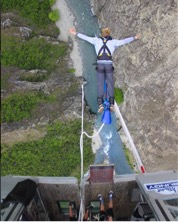
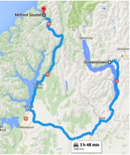

Fly into Queenstown. First thing you should do is pick up your rental van. Vans are by far the easiest and cheapest option to exploring the South Island of New Zealand. New Zealand provides a lot of free services, including water refill stations and free campgrounds. Make sure to download the iPhone App CamperMate, which shows where all of these facilities and campgrounds are located.
Pick a couple adventure activities to do while in the adventure capital of the world. I highly recommend bungy jumping, skydiving, mountain biking, and I have heard great things as well about the canyon shotover jet boat ride as well. Try to do one or two of these today and save one for tomorrow. Spend the rest of the day exploring the awesome town of Queenstown, and make sure to stop and get a burger at either the legendary Ferg Burger or Devil Burger (I found that Devil Burger is better and WAY less crowded).
Do your other 1 or 2 adventure activities, relax in Queenstown, and then in the afternoon make the drive to Milford Sound. Make sure you try bungy jumping before you leave, and definitely go for the biggest one the Nevis Bungy. Before any long drive make sure to refill on gas. Gas stations in the south island are hard to come by and I found some close at around 6 pm.
 
Note: The Southern Alps along the west coast of the island make travelling between the west coast and the eastern side of the alps difficult. There are only a few paths to cross through the Alps, which is why the route is very indirect
Spend the day at Milford sound. I recommend taking a boat cruise through the sound. Weather is unpredictable in the sound, and it rains on almost every day of the year, but you have to go and hope for the best. After a day at the sound, drive back the way you came towards Queenstown. Overnight parking in Queenstown is expensive, so I recommend spending the night somewhere along the path to Queenstown. Just pick a random free campground on CamperMate that you think looks good!
Drive through Queenstown to Wanaka, a similar town that is much less touristy and has been described as what Queenstown used to be like. I highly recommend starting the day with the Roys Peak Track. The start of the hike is right outside Wanaka, and it is a 5-6 hour return hike with stunning views of the area.
Spend the rest of the day relaxing in Wanaka by the lake and the famous Wanaka Tree, and then begin the drive up north towards Mount Cook.
Arrive in Tekapo today, and visit Lake Tekapo, known for its beautiful blue lake and the iconic cobblestone church. If you happen to spend the night around here, be prepared for some incredible star gazing, as Tekapo is located in the largest Dark night sky reserve in the world. Next, drive along Lake Pukaki towards the Mount Cook Village and prepare for a big hike the next morning.
If you aren’t worn out by now, I highly recommend doing the Mueller Hut Route today. It is an exhausting climb directly up the side of the mountain. If you have the time, you can spend the night at the top inside a cool little hut and hike down the next morning, but it is definitely possible to hike up and back in the same day. Just make sure to start the hike early enough. The views from the top are definitely worth it, especially if you get lucky with nice weather.
Return to your campervan, and begin the big drive back to Queenstown to catch your flight out. If you have the time, fit in another adventure activity in Queenstown before heading home.